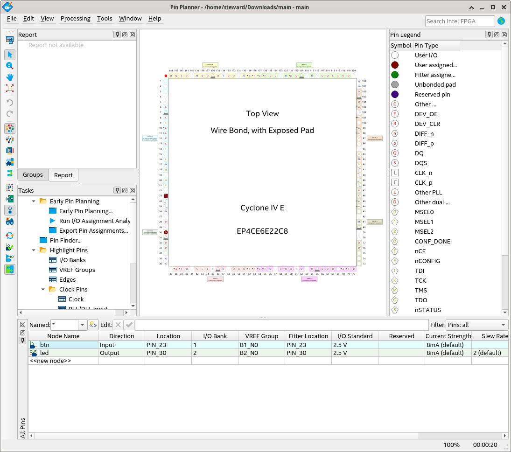
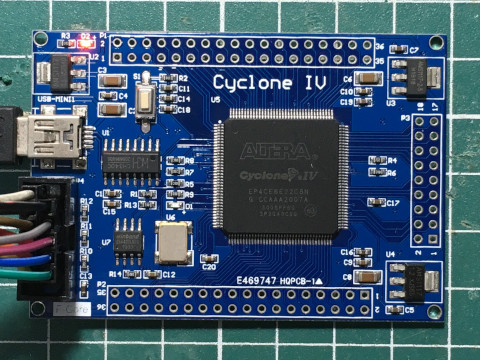
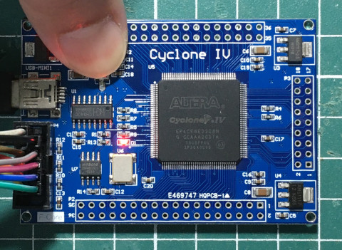

main.vhd
library ieee;
use ieee.std_logic_1164.all;
entity main is
port(
btn : in std_logic;
led : out std_logic
);
end main;
architecture logic of main is
begin
process(btn) is
begin
led <= not btn;
end process;
end logic;
腳位


